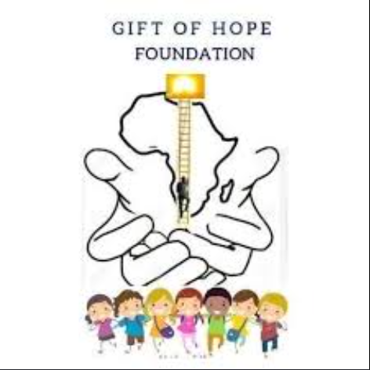

Educational Support
Offering tutoring, school supply distribution and literacy programmes for youth.
Food Assistance
Providing sustainable meal support and grocery relief packages to local households.
Youth Development
Skills training, CV building and mentorship for unemployed South African youth.
Community Outreach
Collaborating with clinics to deliver essential healthcare resources and support.
Common Questions
You can contact the foundation through the enquiry page to ask about volunteering, sponsorship or other support.
The programmes support vulnerable children, unemployed youth and disadvantaged families.